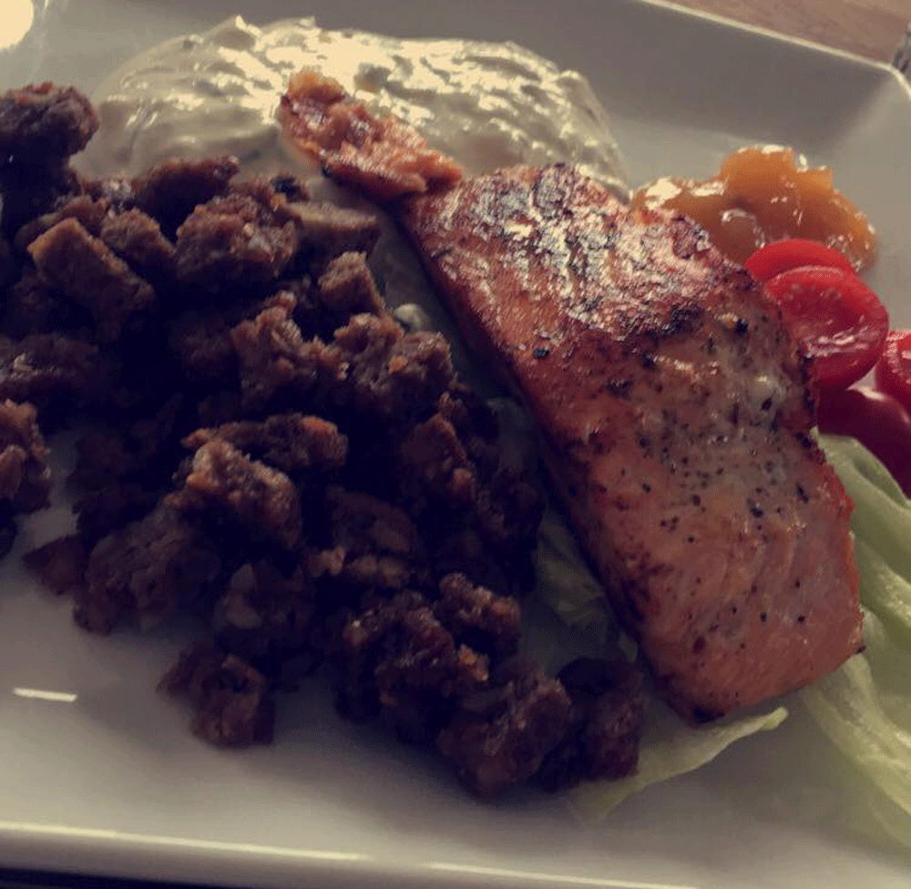

Food Festival
Aarhus Food Festival er en madfestival hvor du har muligheden, for at prøve en masse forskellige madopleverser.
du har muligheden for at gå på opdagelse i madens verden.
Du har ovenikøbet også muligheden for at finde inspiration til en ny ret,
og du har muligheden for at have en hyggelig dag sammen med venner/familie.
Hvor i kan prøve smage en masse forskelligt mad, så hvis du har nogle nysgerrige smagsløg.
så kan det klart anbefaldes og tage en ven eller veninde underarmen, og tage til Food Festival.
Dato:
6.-8. September 2019.
Lociation:
Tangkrogen, Aarhus.
